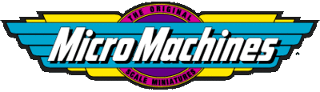
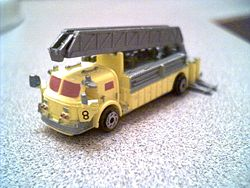
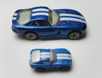
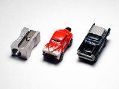

Micro Machines: The Original Scale Miniatures (called either "Micro Machines" or simply "Micros") were a line of toys originally made by Galoob (now part of Hasbro) in the mid 1980s and throughout the 1990s. Micro Machines were literally that - tiny scale component style "playsets" and vehicles that were slightly larger than "N scale" at an average length of 1.5 inches. Although Micro Machines have not been sold in the United States in some years, newer models are available in the UK and Europe.

American LaFrance ladder truck with extending stabilizers, ladder and opening doors
Many different styles of Micros were made including all the popular cars and trucks of the times, trains, emergency vehicles, tanks, boats, airplanes, helicopters, and motorcycles. The Tuff Trax series contained many of the popular TNT Motorsports Monster Trucks including the legendary Grave Digger truck. Star Trek and Star Wars models were also made, as were models from other science fiction franchises including Babylon 5, Power Rangers and MIB. They even immortalized James Bond and Indiana Jones in micro scale. After the Hasbro Buyout, they came out with Winner's Circle NASCAR and GI Joe themed cars and playsets.
While the Micro Machines collection was known primarily for sizing down automobiles, it also featured several excellent playsets including 1991's fold-out Super Van City. Licensed character products would often be comprised of fold-open heads including miniature characters and vehicles interactive with their playset environment. Micro Machines also utilized several diverse features such as color-changing cars and "Private Eyes" vehicles that even allowed one to peek inside and view an illustration of the inner contents.
Micro Machines had a well-known advertising campaign in the 1980s involving fast-talker John Moschitta, Jr. who would speak very fast in their TV commercials, ending each one with the slogan "If it doesn't say Micro machines, it's not the real thing"[1].
In the 1990s, transforming playsets were released. Some could transform from one playset to another, such as a factory to a test track. Others could transform from giant vehicles to playsets, such as a 6x6 to a jungle. Earlier ones included one that could transform from a toolbox to a city. Another innovative release was a line of special boats in the 1990s. While past boats had merely sunk and were not intended for water use, these new sets could actually float and came in many different sets.
When sold to Hasbro, the basic line was largely discontinued, and new packaging of the toys didn't catch on as well as hoped, though some imitators continue to be sold in toy stores. In 2006, the brand name was visible only in the detail panel of some medium-sized Star Wars die cast vehicles of very good quality.

A Micro Machines Dodge Viper (bottom) compared to a Matchbox version of the same car.

Micro Machines compared to a pencil sharpener.
Micro machine collecting interest is much smaller than Hot Wheels. It might be considered to be a 1990s item, which some say is not long enough ago to generate adult interest. Some other reasons are that you had to buy a pack at a time, and typically only one would be a new model in any given year, and the toys are smaller and easy to lose. Most sets are worth less than the $5 retail, though some like Civil War can command over $10, and the Aliens set of 3 are on eBay stores for $50. The rare US version of the action fleet Aliens jump ship has been asking over $70. Some rare Star Trek sets and ships are being sold for $100 to $370 by online eBay stores, Some of the hardest to find packages of cars have commanded prices around $100. Those packages often contain prototypes never released to the public. Often large lots can be had for quarters per vehicle on Ebay.
Micro Machines kept sealed in package take up a lot of space, but ones which are loose don't take up much space at all. You can use one of the original showcases for Micro Machines, or some collectors just use fishing tackle boxes to store their collection.
Some individual cars such as the SVO Mustang have changed hands for over $25 in the early 2000s, though with the appearance of traders who have nearly every vehicle for sale all the time, it is much more difficult to see values over $5 for any one vehicle. However, there are some rare models that continue to trade at high values such as the collector #CE3R Corvette from 1999. Some military vehicles are remarkably good models, those in accurate markings or Soviet equipment such as the T-72 can also be quite valuable. Rarer collections such as Star Trek or Star Wars are also valuable. A solid gold Star Trek model that was a grand prize in a drawing recently sold for over $5,000.
There are a couple of comprehensive Micro Machines web sites, but no books, and it can be quite a challenge to identify cars since they are too small to label, so it helps to be an expert on classic or not-so-classic cars and military tanks and aircraft.
Recently, The Micro Machines brand was revived for a few years in response to the popularity of the similar Speedeez brand. Hasbro also opted to use many fantasy castings in the revival. The revival only lasted a couple years. Hot Wheels also had its hand in the trend, releasing their brand known as Atomix. (Hot Wheels also produced a brand called Planet Micro in the late 1990s.)
The brand 'Micro Machines' has also been incorporated into the packaging of the popular 'Star Wars Titanium' 3 inch vehicle range.